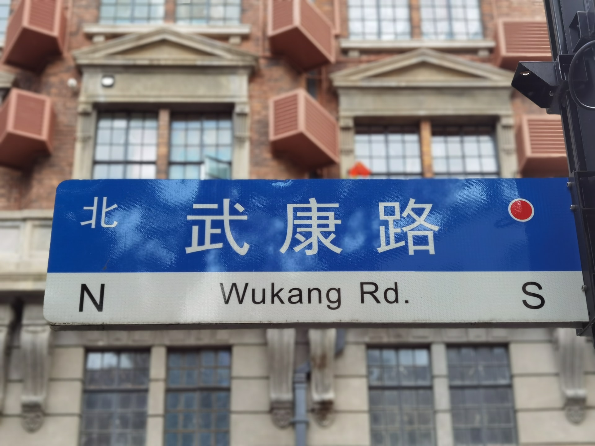
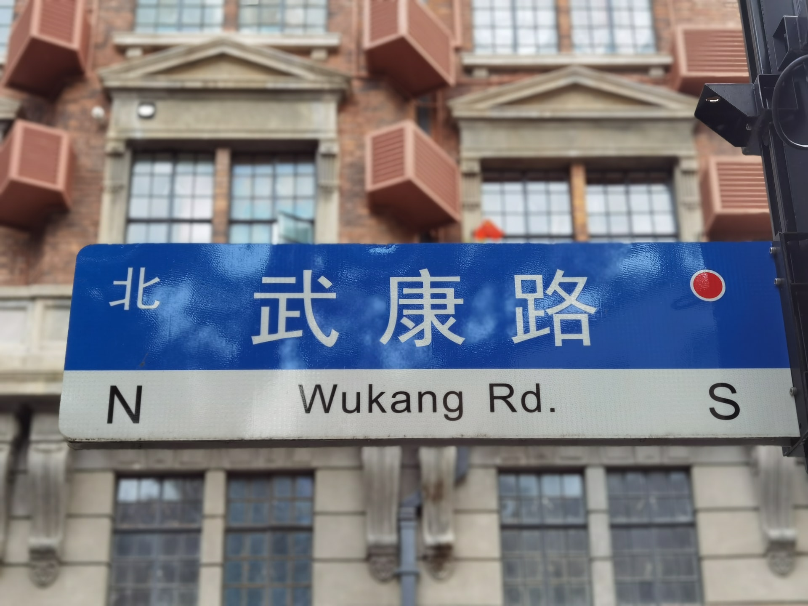

Nanjing Road is one of Shanghai's main shopping streets and stretches almost 3.5 miles long, starting at The Bund and finishing at the junction by Jing'an Temple. The road is one of the worlds busiest shopping streets. You can buy everything from high-end fashion to cheap and tacky souvenirs and everything in between! It is great to visit in the evening to see all the neon signs lit up.

The Bund is Shanghai's most iconic symbol and associated worldwide with Shanghai, London has Big Ben, Sydney the Opera House, Paris the Eiffel Tower, and The Bund is Shanghai's most famous landmark! The area is known for its impressive mile-long waterfront views of Pudong's huge skyscrapers and the Oriental Pearl Building. On one side you have views of tall modern skyscrapers, and on the other side is a reminder of Shanghai's colonial past with lots of historical buildings.I would suggest going to The Bund during the day and in the evening to witness what it’s like day and night, however the evening is my preference as I loved seeing all the buildings lit up. The promenade is a great place to take a stroll and take in the views. The buildings are lit up at 7pm so go a little before then to see the nightly light show and to get a good viewing spot. Just make sure to check the weather before as sometimes fog and rain can ruin the views of the bund, check for the clearest evening whilst you’re there.
For picture-perfect views of the Shanghai waterfront, stroll along the Bund — and don’t forget your camera! Located on the Western bank of the Huangpu River, the Bund, meaning “embankment,” was initially used as a British settlement and trading post back in the 1800s. As you walk along its edge, you’ll be able to people-watch, spot the Pearl across the bay, and gaze at beautiful buildings that line the walkway. Architecture enthusiasts will be able to identify 26 different architecture styles along the way, including Gothic, Baroque, Romanesque, and Renaissance.

Step back in time with a visit to Yu Garden, the most famous in Shanghai. Located in the center of the Old City, the garden’s serenity is a welcome respite from the bustle of the city streets, though it itself is a tourist attraction. After enjoying the picturesque pagodas, lush green vegetation, and rippling ponds, head to the nearby bazaar, which features narrow, winding alleys where vendors sell fresh food, homemade goods, and other local products. There are some parts of this garden that have been here since the 16th century. Throughout this beautiful garden, you can find a shed load of traditional Chinese Pagodas, quaint bridges, and a huge variety of trees, plants, and wildlife.


 
